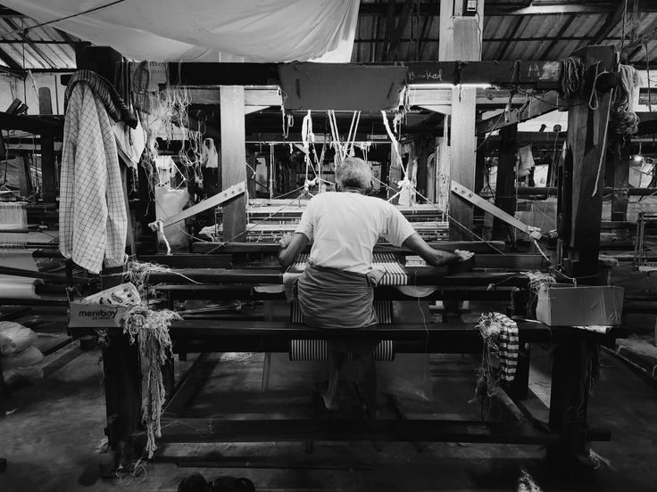
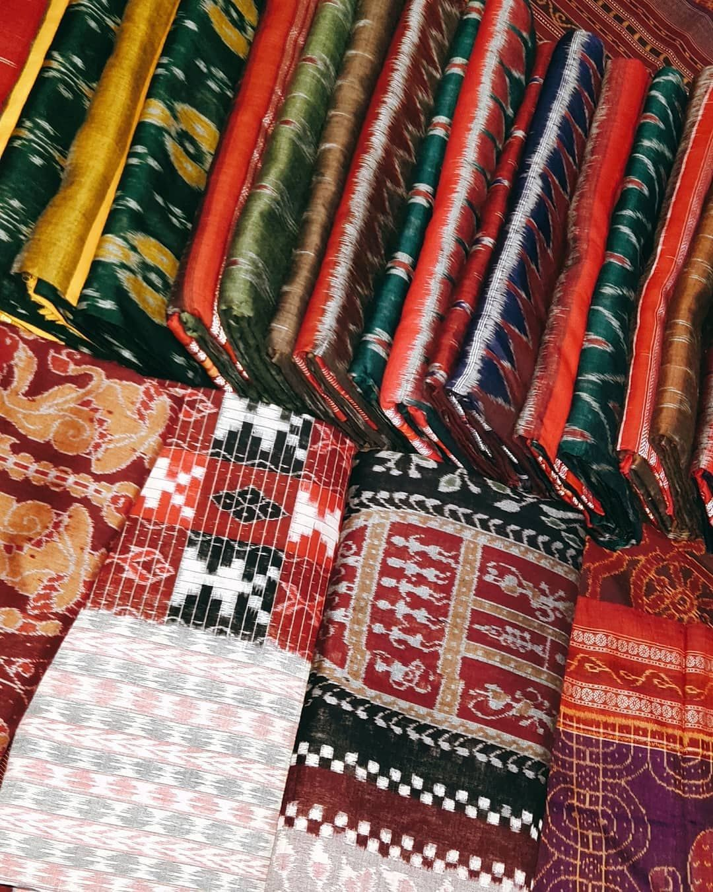
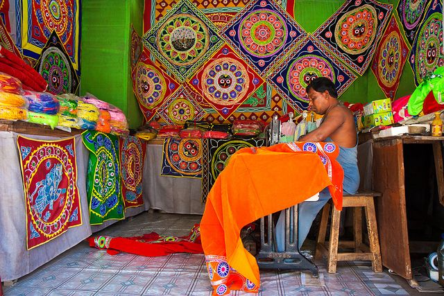
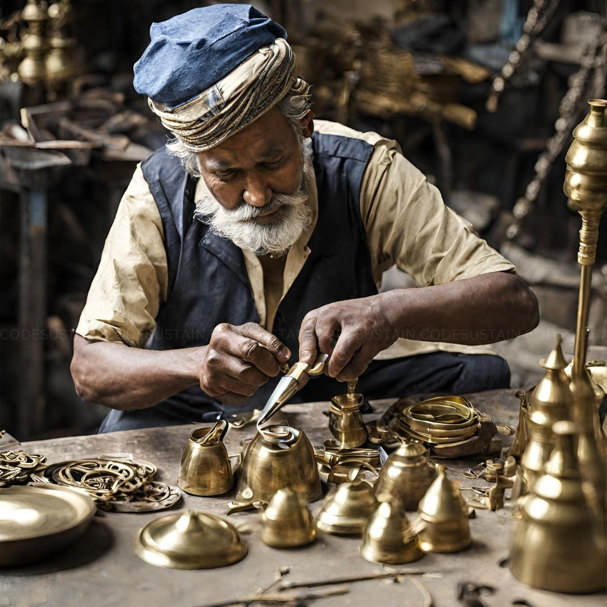
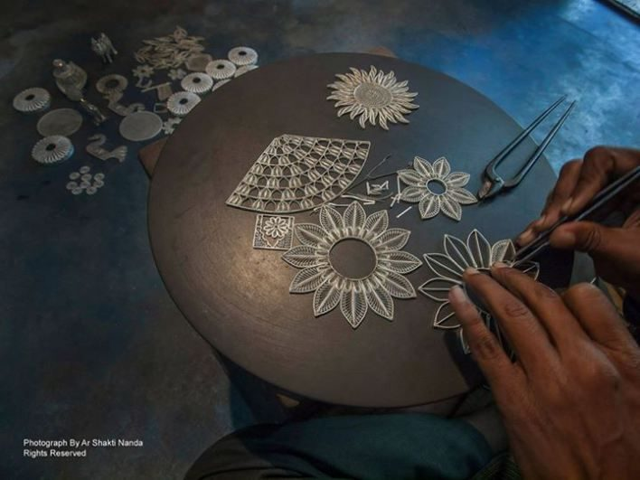

THREADS THAT CARRY STORIES.
Discover the journey of Sutrika where Odisha's timeless traditions meet modern innovation.
Explore Collection
Sutrika was created with a dream to celebrate Odisha's rich artistic heritage and connect traditional artisans with the modern world.
Every weave, every carving and every handcrafted piece carries generations of skill, culture and emotion.
Our mission is to preserve these traditions while empowering artisans through innovation and technology.
Inspired by Odisha's ancient crafts and cultural heritage.
Building a platform where every artisan gets recognition.
Sutrika brings tradition and technology together.
Taking Odisha's stories to the global stage.




Sutrika combines the wisdom of artisans with modern technology, creating a bridge between heritage and the future.
Create Your Own